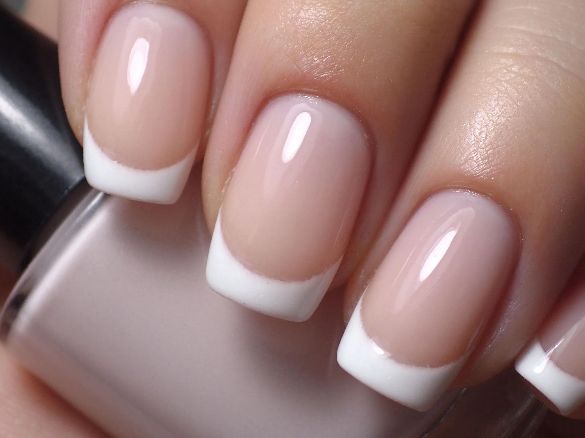

美甲法式水晶是什麼？進階入門攻略
法式水晶最考驗的不是『會不會做』，是那道白色微笑線——弧度、對稱、厚度，差一點就垮。
法式水晶原理與辨識重點：美甲師不說的粉直接塑出白邊
你以為法式只是塗白色？水晶法式的難度，跟畫法式貼紙完全不是一個量級。傳統法式水晶是用『粉白水晶珠』直接在指尖塑出一道白色微笑線，下面接透明水晶。因為是一體成形、有厚度的白邊，比一般貼紙法式更立體、更耐看，但對稱性和弧度全靠手感——左右兩道線要像照鏡子。
誰適合做法式水晶？經典工法對號入座
已經會做基礎水晶、想挑戰進階工法的美甲師；追求經典高質感的客人也愛點它。
法式水晶美甲施作步驟：白粉微笑線
先做透明水晶延甲到想要長度 → 取粉白珠在指尖塑微笑線，控制兩側對稱 → 半乾時修弧度、修厚度 → 固化後整支打磨拋光。
法式水晶優缺點分析：美甲持久度與傷甲評估
| 優點 | 說明 |
|---|---|
| 立體白邊、質感高、不掉色，是真正『經典中的經典』。 | 是歐美流派的招牌，進階就能上手 |
| 缺點 | 說明 |
| 極度考驗基本功，兩邊笑線歪一點就立刻看得出來。 | 前置與新手最常一次取粉太多，白邊胖成一大塊。記住：微笑線要『細、順、對稱』，厚了就俗。沒顧好會打折 |

法式水晶新手雷區：線要順與常見錯誤
注意：新手最常一次取粉太多，白邊胖成一大塊。記住：微笑線要『細、順、對稱』，厚了就俗。
法式水晶和其他美甲做法的差別比較
跟貼紙法式（french-tips）比，貼紙靠輔助、快速但扁平；水晶法式立體、耐看、但耗時。跟一般凝膠法式比，水晶白邊硬挺不塌。
法式水晶美甲常見問題 FAQ
Q：水晶法式會不會容易掉白邊？ A：做好後白邊是水晶本體的一部分，不會像貼紙那樣整片脫落，但前端撞擊還是會缺角。
Q：為什麼這麼貴？ A：工時長、對稱要求高、失敗率也高，價格反映技術。